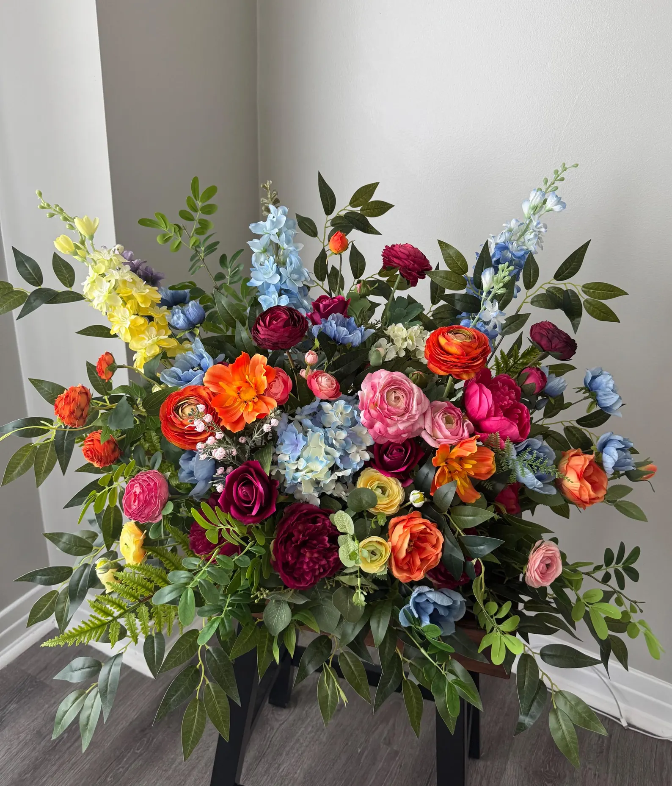

Welcome to the fascinating world of Floriography, commonly known as the language of flowers. For centuries, humans have used flowers to communicate feelings, emotions, and messages that words alone could not express. Since this is just a short lab assignment I'll go over some of the ones I like.
